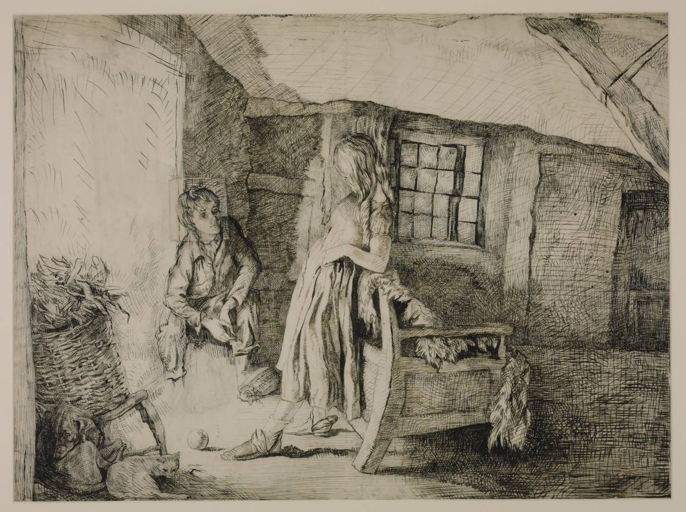

Về Tác Giả
Emily Jane Brontë (30/07/1818 – 19/12/1848) là tiểu thuyết gia và là nhà thơ người Anh. Bà là người con thứ tư trong gia đình gồm sáu người con. Bà đã phải để tang mẹ khi chỉ mới ba tuổi. Hai chị lớn cùng cha khác mẹ của bà chết từ tuổi thiếu niên do bị còi cớm trong môi trường u ám, giết mòn tinh thần của trường nữ sinh họ theo học. Chỉ một năm sau ngày Đồi gió hú ra đời, Emily bị nhiễm lạnh trong lễ tang của người em trai. Vào ngày 19/12/1948, bà qua đời vì bệnh lao phổi. Cô em gái Anne, không đầy một năm sau Emily mất, cũng vội đi theo chị. Cả Charlotte, người chị cả, được coi là khỏe mạnh nhất cũng không qua được ngưỡng 40. Cha của họ, mục sư Brontë, đã phải sống để chôn cất các con và chỉ qua đời một năm sau đó. Thật cứ như mụ già Định Mệnh cay nghiệt đã dồn những đòn hằn học nhất giáng xuống gia đình tài hoa này.
Emily Brontë - Tranh minh họaVề Đồi Gió Hú
Đồi gió hú là tiểu thuyết duy nhất của Emily Brontë và được coi là một tác phẩm kinh điển của Văn học Anh.
Toàn bộ tiểu thuyết xoay quanh bi kịch tình yêu giữa cô chủ Catherine và Heathcliff – đứa con nuôi thấp kém trong gia đình Catherine. Do những mâu thuẫn về sự khác biệt giai cấp, Catherine đã kết hôn cùng cậu chủ trang trại kế bên, Heathcliff ôm nỗi hận bỏ đi biệt tích. Nhiều năm sau, “quý ngài” Heathcliff quay lại ngôi nhà trên đồi gió hú với một kế hoạch trả thù kỹ lưỡng hòng đoạt lại người mình yêu.
 Catherine Earnshaw và HeathcliffĐọc Đồi gió hú, có thể cảm nhận tình yêu mãnh liệt của Heathcliff dành cho Catherine. Hắn sống với tình yêu ấy, theo đuổi tình yêu ấy, chấp nhận tất cả, cũng như từ bỏ tất cả, sẵn sàng vượt qua mọi rào cản xã hội, địa vị để ở bên Catherine. Heathcliff yêu Catherine hết mình, yêu bằng tất cả những gì hắn có. Nhưng chính sự hết mình ấy là con dao hai lưỡi, là tiền đề cho lòng hận thù của Heathcliff khi tình cảm của hắn không được đền đáp lại.
Tình yêu với Catherine thật sự đã ám ảnh cả một đời Heathcliff!
Không chỉ về Heathcliff, trong Đồi gió hú ta còn thấy rất nhiều mảnh đời khác: Catherine đáng yêu nhưng hoang dại, ương ngạnh và bồng bột dẫn đến bi kịch cho chính cô và mọi người xung quanh; Edger Linton – chồng Catherine – chàng công tử gia giáo, tử tế đến mức yếu hèn, chịu đựng, nhẫn nhịn màn trả thù của Heathcliff,… Rất nhiều những nhân vật khác trong Đồi gió hú cũng trở thành nạn nhân của Heathcliff, bị giày vò về cả thể xác và tinh thần.
Heathcliff giống như một biểu tượng của khao khát bản năng. Để đồng cảm được với Heathcliff, trước hết phải biết chấp nhận bản năng của mình như một phần của bản thân, và sẽ thấy chỉnh mình hiện hữu trong mạch cảm xúc và dòng suy nghĩ của Heathcliff. Ta cũng từng yêu và kháo khát chiếm hữu tình yêu, ta cũng từng cực đoan muốn thù hận, ta từng đau khổ muốn bỏ đi đến một nơi thật xa để bắt đầu lại từ đầu.
Cuốn tiểu thuyết duy nhất của Emily, ngày nay được phần đông giới phê bình văn học đánh giá là lớn nhất trong các tác phẩm của ba chị em Brontë, nhưng vào lúc ra đời, chất dữ dội cuồng nhiệt của nó đã gây một chấn động quá mạnh đối với những chuẩn mực đạo lý thời Victoria để có thể khiến được chấp nhận dễ dàng. Những phản ứng loại ấy đã khiến Charlotte, trong lần tái bản năm 1850, đã phải lên tiếng bênh vực tác phẩm của em gái trong một lời tựa:
"Đồi gió hú được đẽo tạc trong một xưởng hoang dại bằng những dụng cụ đơn sơ, từ chất liệu mộc mạc. Nhà điêu khắc thấy một khối đá gannit trên một cánh đồng hoang quanh quẽ: nhìn kỹ chàng thấy từ tảng đá, có thể tạo một cái đầu như thế nào, man rợ, đen đúa, hung hãn; một dáng hình được đắp nặn với ít nhất là một yếu tố của hùng vĩ – sức cường. Chàng làm việc với một cái đụ thô sơ và không theo mẫu nào ngoài thị ảnh từ những suy tư của chàng. Với thời gian và lao động, khối đá mang hình người. Và kia, nó sừng sững đứng, đồ sộ, đen đúa và cau có, nửa tượng, nửa núi đá: là tượng thì khủng khiếp và giống như quỷ; là núi đá thì hầu như đẹp, vì nó có màu xám dịu và mặc lớp rêu của đồng hoang và đám thạch nam với những chùm hoa hình chuông và hương thơm ngạt ngào của nó, vẫn thủy chung mọc sát dưới chân gã khổng lồ ấy.”